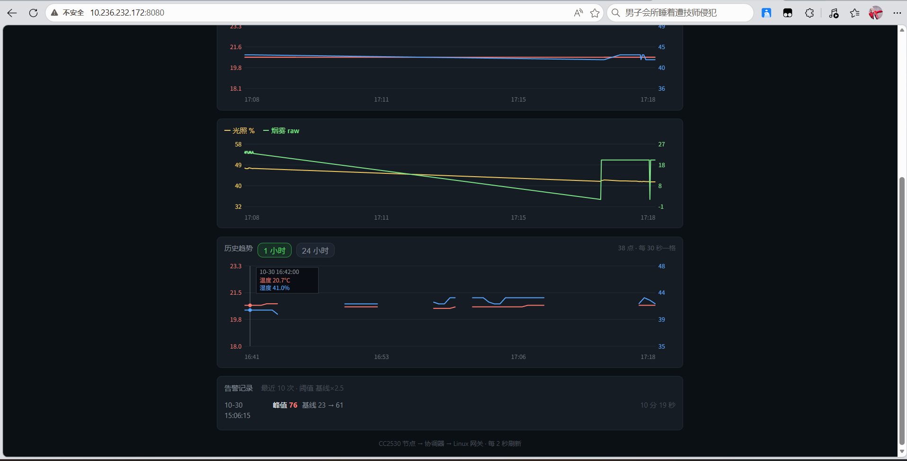

在哪些层面动手
四层，都是自己写的裸机与驱动
寄存器级配置、GPIO / ADC / 单总线时序、串口收发
无线组网
IEEE 802.15.4、Z-Stack 任务调度、自定义定长帧协议
Linux 用户态
termios、epoll 事件循环、SQLite、手写 HTTP、systemd
上云与可视化
MQTT 报文自己拼、canvas 画曲线、时间桶聚合
项目
全部项目 →
ZigBee 无线环境监测系统
电池供电的节点测温湿度、烟雾、光照、人体，经 ZigBee 汇聚到协调器； 一路串口进 Linux 网关落库、出曲线、判烟雾告警、网页远程控制继电器， 另一路并联给 ESP32 转成 MQTT 上云。四层全部自己写。
开工
下一个项目
手上的板子还没用完。方向在「把网关搬到公网机器上」和「换一颗别的 MCU 重写采集层」之间， 没动手之前不先写计划——写成「即将开始的宏伟项目」没什么意义。
最近写的
全部手记 →第 7 周：历史曲线，以及被推翻两次的「串口丢帧」
用 SQL 时间桶把 86400 条压成 96 个点，断档不补 0，X 轴按真实时间定位。 附带一次翻案——追了两天的「串口只有 0.33 帧/秒」，最后发现是 systemd 服务 在后台跑着第二个网关，两个进程抢同一个 tty。
第 6 周：网页点一下，继电器就响——中间隔了三次翻车
第一版用广播发命令，20 次只成 5 次；第二版为了补丢包连发 5 次， 命中率上去了却把休眠终端挤出网络。真正的解是「单播 + 只补发 1 次 + 间隔对齐 POLL_RATE + 关掉 APS 确认」，实测 8 次命令 8 次命中。
第 5 周：ESP32 上云，以及「COM 口在」不等于「板子活着」
四个坑全和代码无关：设备管理器里有 COM 口但主芯片根本没上电；
自动下载电路不通，esptool 默认复位每次把手动进好的下载模式踢掉；
新版安装器让 idf.py 找不到工具链；换热点后 Ubuntu 抱着旧租约不换 IP。
关于这个站
写给以后会忘事的自己我是 qikai-lab，做嵌入式和物联网方向的东西。这个站只放自己动手做完的项目， 不放转载、不放资料整理。
写法上有两条自己定的规矩。一是只写真实发生过的事： 写错的那几版留着，因为「为什么错」比「正确做法」有用得多， 三个月后回来看的也是这部分。二是给可以对照的现象和数据—— 帧数、坏帧率、延迟几秒、哪一次是 8/8 命中，而不是一句「效果很好」。
站点的结构是「个人 → 项目 → 手记」三层：这里是入口， 项目放成体系的东西（架构、硬件、连线、验收数据）， 手记放按时间写的开发过程。手记是先写的，所以它的顺序就是当时的真实顺序， 不是按知识点整理过的。
代码在 GitHub：github.com/qikai-lab。